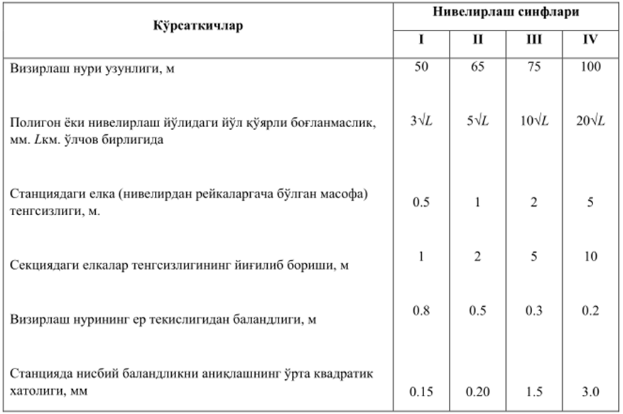
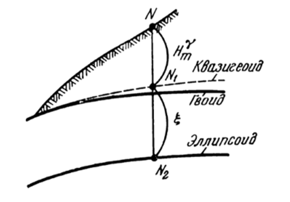
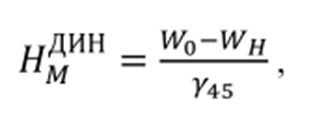

11-амалий иш Мавзу: Баландлик асос тармоқлари ва уларнинг аниқлигига бўлган талаблар. Баландлик тизими
Шаҳар, саноат ва энергетик комплекслар ҳудудларида барпо этиладиган баландлик геодезик
тармоқлар аниқлиги ва зичлиги, майдон ўлчамига ҳамда режалаш ва план олиш ишларининг
аниқлигига боғлиқ бўлади.
Инженер-геодезик ишлар 1-V синф давлат нивелирлаш тармоғига асосланади. І-ІІ синф
нивелирлаш тармоқлари бош баландлик асосини ташкил этиб, улар орқали мамлакатимизнинг барча
худудларида якка баландлик тизими ўрнатилади.
1-синф нивелирлаш тармоқлари майдони 500 км” дан катта бўлган йирик шаҳарларда барпо
этилади. II-IV синф нивелирлаш тармоқлари эса майдон ўлчамига боғлиқ равишда қуйида
келтирилган тартибда барпо этилади.
Шаҳар худуди майдони, км”
50 дан 500 гача
10 дан 50 гача
1 дан 10 гача
Нивелирлаш синфи
II ва III
III Ba IV
IV
Шаҳар ва саноат ҳудудларидаги майдонларда барпо этиладиган нивелирлаш тармоқларининг
техникавий тавсифномаси 33.1-жадвалда
келтирилган.
II-синф нивелирлаш тармоқларни яратиш учун майдонда марка ва реперлар тенг тақсимланган
бўлиши керак. Нивелирлаш тўғри ва тескари йўналишда бажарилади.
II-синф нивелирлаш тармоғини тўлдириш учун, унинг репер ва маркаларига таянган, алоҳида
йўл
ёки полигон кўринишида ІІІ синф тармоқ ўтказилади.
Давлат нивелирлаш тармоқларининг техникавий тавсифи.

Геометрик нивелирлаш усулида ер юзаси баландлиги фарқини аниқлашда, ернинг турли
нуқталаридаги сув сатҳи юзалари ўзаро параллел эмаслиги натижасида, нисбий баландликлар
қийматларида айрим
ноаниқликларни юзага келтиради. Бу ер қатлами массасининг нотекис
тақсимланиши ва ернинг суткали харакати натижасида содир бўлади. Сув сатҳларининг параллел
эмаслигини инобатга олиш принцпига боғлиқ ҳолда нуқталар баландлиги нормал, динамик ва
ортометрик баландликларга ажратилади. МДҲ давлатларида М.С. Молоденский томонидан таклиф
этилган нормал баландликлар тизими қабул қилинган [25,27].
Нуқталарнинг нормал баландликлари квазигеоид юзасидан шовун чизиғи йўналиши бўйича
ҳисобланади. Квезигеоид юзаси геоид юзасига
яқин. Очиқ осмон ва денгизларда квазигеоид ва геоид юзалари устма-уст
тушади. Квазигеоид юзаси, ер юзасидаги нуқталарга нисбатан Ернинг ташқи гравитацион майдони
бўйича, референц эллипсоид юзасига нисбатан эса,астрономик – граваметрик нивелирлаш ёрдамида
аниқланади. 34.1–расмда N-нуқтанинг нормал баландлиги -, N- нуқтадаги баландлик аномалияси ξ
(N-нуқтанинг квазигеоид ва эллипсоид юзалари орасидаги масофа) кўрсатилган.

1 –расм .Нуқтанинг баландлигига оид
Тоғли районларда I ва II класс ҳамда III класс нивелирлаш пунктлари орасидаги ўлчанган
нисбий баландликлар қийматларига, гравиметрик ўлчашлар асосида ҳисобланган нормал
баландликлар тизимига ўтиш
тузатмалари киритилади.
Инженер – геодезик ишларни бажаришда одатда, ўлчанган нисбий баландликка тузатма
киритилмайди. Бунинг сабаби, техникавий аниқликдаги нивелирлашни қўлланилиши ёки юқори
аниқликдаги нивелирлашнинг жуда қисқа масофада бўлишидир. Шу билан бирга, айрим инженерлик
ишларини бажаришда, масалан тунеллар ва плотиналар қурилишида баландликни таъминлашда
ўлчанган нисбий баландликка тузатма киритиш керак бўлади.
Динамик баландликлар тизимида сув ҳавзалари сатҳи бир хил отметкага эга бўлади ва у
қуйидаги
ифода ёрдамида ҳисобланади.

Бу ерда Wo вa WH- сув сатҳлари учун О ва Н нуқталардан ўтувчи оғирлик
кучи қиймати.
Ү45- ернинг ўртача кенглиги (450) учун оғирлик кучининг нормал
тезлашиш қиймати.
Баландликнинг динамик тизимини Ернинг гравитацион майдонида бажариладиган ишлар билан
боғлиқ
бўлган инженер -техник ҳисоблар учун қўллаш мақсадга мувофиқ. Давлат геодезик тармоқларини
барпо этишдаги нивелирлаш натижаларини ҳисоблаш учун динамик баландликлар қўлланилмайди.